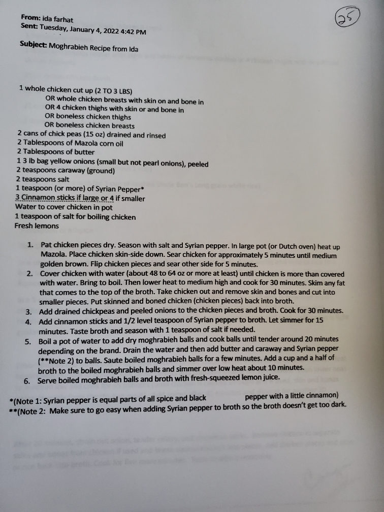

Lebanese couscous with chicken, chickpeas, pearl onions, caraway, and cinnamon — Ida's recipe
Section
Syrian-Lebanese
Source
Ida Farhat, Jan 2022
Ingredients
Chicken & Broth
1 whole chicken cut up (2–3 lbs) — or chicken breasts, thighs (bone-in or boneless)
2 Tbsp Mazola corn oil
2 Tbsp butter
1 tsp (or more) Syrian Pepper (see below)
Salt to taste
Water to cover chicken
1 tsp salt for boiling
3–4 cinnamon sticks
Vegetables
2 cans (15 oz) chickpeas, drained and rinsed
1 (3 lb) bag small yellow onions, peeled (not pearl onions)
Moghrabieh
Dry moghrabieh balls (Lebanese couscous — from package)
2 tsp caraway, ground
2 tsp salt
Syrian Pepper to taste
Fresh lemons, for serving
Syrian Pepper*: Equal parts allspice and black pepper with a little cinnamon. Go easy adding it to the broth — too much darkens it.
Original Recipe

Emailed recipe from Ida Farhat — January 4, 2022
Directions
Pat chicken pieces dry. Season with salt and Syrian pepper. In a large pot or Dutch oven, heat Mazola over medium-high. Place chicken skin-side down. Sear ~5 minutes until golden brown. Flip and sear other side 5 minutes.
Cover chicken with water (48–64 oz). Bring to a boil. Lower to medium-high and cook 30 minutes. Skim any fat that rises. Remove chicken, discard skin and bones, cut into pieces. Return chicken pieces to broth.
Add drained chickpeas and peeled onions to the broth. Cook 30 minutes.
Add cinnamon sticks and ½ tsp Syrian pepper. Simmer 15 minutes. Taste and add 1 tsp salt if needed.
In a separate pot of boiling water, cook dry moghrabieh balls ~20 minutes until tender (time varies by brand). Drain well.
Add butter, caraway, and a pinch of Syrian pepper to the drained moghrabieh balls. Sauté for a few minutes. Add 1½ cups of the chicken broth to the balls and simmer on low for 10 minutes.
Serve the moghrabieh balls in bowls, ladle chicken, chickpeas, onions, and broth over the top. Finish with a generous squeeze of fresh lemon juice.
Key tip: Go easy with Syrian pepper in the broth — it darkens quickly. Add gradually and taste as you go.
Serving: Fresh lemon juice at the table is essential — it brightens the whole dish.